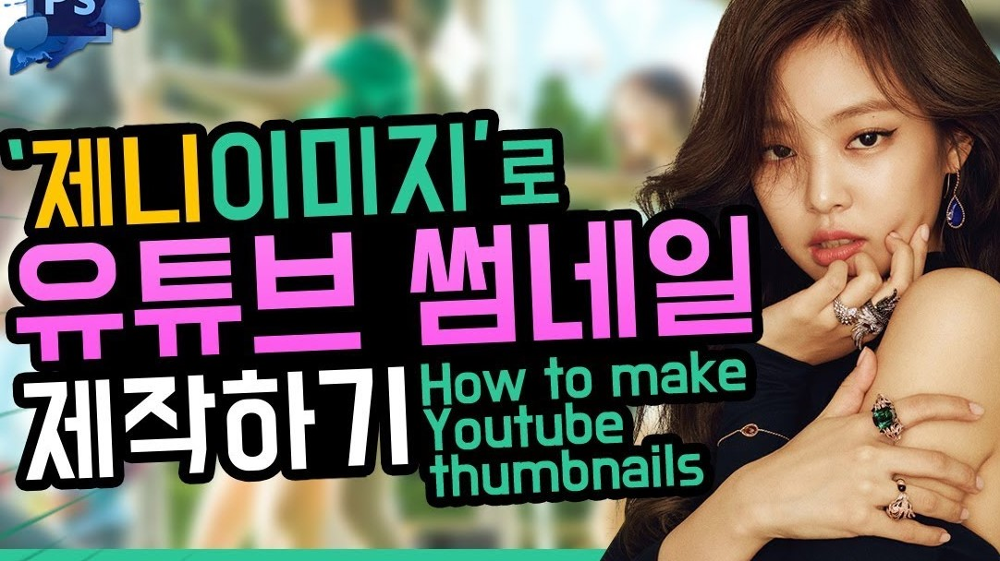

-
 프론트 엔드, 무조건 하나 클론 코딩해보자~! 웹개발의 시작을 위한 강의를 진행합니다 크리미 파크의 클론코딩 15k views
프론트 엔드, 무조건 하나 클론 코딩해보자~! 웹개발의 시작을 위한 강의를 진행합니다 크리미 파크의 클론코딩 15k views -
프론트 엔드, 무조건 하나 클론 코딩해보자~! 웹개발의 시작을 위한 강의를 진행합니다 크리미 파크의 클론코딩 10k views
-
프론트 엔드, 무조건 하나 클론 코딩해보자~! 웹개발의 시작을 위한 강의를 진행합니다 크리미 파크의 클론코딩 5k views